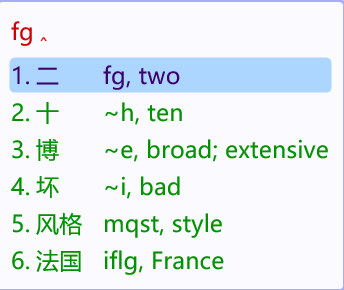

在 Rime 输入法（小狼毫 / 鼠须管 / ibus-rime / fcitx5-rime）的候选栏里 实时显示英文释义。纯离线，不需要 API key，打字不卡。

英文在候选的注释槽里 —— 按空格上屏的永远是中文，不会误选英文
# 1) 插件（Rime 用户目录：小狼毫 %APPDATA%\Rime，鼠须管 ~/Library/Rime） cp lua/input_text.lua <Rime 用户目录>/lua/ # 2) 词表：自己构建，或直接下载 Release 里预生成的 cache.txt python tools/fetch_cedict.py && python tools/build_cache.py # 3) 挂到方案：存成 <方案>.custom.yaml，然后重新部署 Rime patch: "engine/filters/+": - lua_filter@*input_text*filter
Windows 上也可以直接跑 scripts\install.ps1，它会自动完成上面三步。
filter，英文写在注释槽；空格上屏的永远是中文。编码, 英文；单字没有编码时用你正在输入的编码兜底。tools/glossary.py，改一行重跑构建即可；自检脚本防回退。直接取词典首条释义会得到下面这些结果。这一版经过两轮全量审查，把这些问题都修掉了：
| 词 | 直接取词典 | rime-en-gloss |
|---|---|---|
| 打 | dozen（一打） | to hit; to play |
| 告诉 | to press charges（起诉） | to tell; to inform |
| 东西 | east and west | thing; stuff |
| 一次 | first | once; one time |
| 比萨 | Pisa, town in Toscana, Italy | pizza |
| 大拇指 | Tom Thumb | thumb |
| 妙 | （原为空壳词条，没有英文） | clever |
| 台风 | stage presence, poise | typhoon |
机器翻译被刻意排除在数据生成之外（它产出过 人不 → No, no, no、就能 → Yeah）。
完整记录见 质量审查文档。